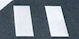

生成の工場

この街は手で建てるのではない。生成する。 記事を放り込むと、AIが本文と画像を読み、区画の記述子を吐き出す。
部品表
- アーキタイプ（区画の性格）
- 画像から抽出したパレット
- 既存区画への道路（関連度）
- 塔の高さ（情報密度）
グレーの舗装のように無機質な部品が、組み上がると都市になる。
ローカルで鍛える
ビルドはローカル。静的ファイルを吐いて、そのまま上げるだけ。 生成には、あなたの AI を使える。

この街は手で建てるのではない。生成する。 記事を放り込むと、AIが本文と画像を読み、区画の記述子を吐き出す。
グレーの舗装のように無機質な部品が、組み上がると都市になる。
ビルドはローカル。静的ファイルを吐いて、そのまま上げるだけ。 生成には、あなたの AI を使える。